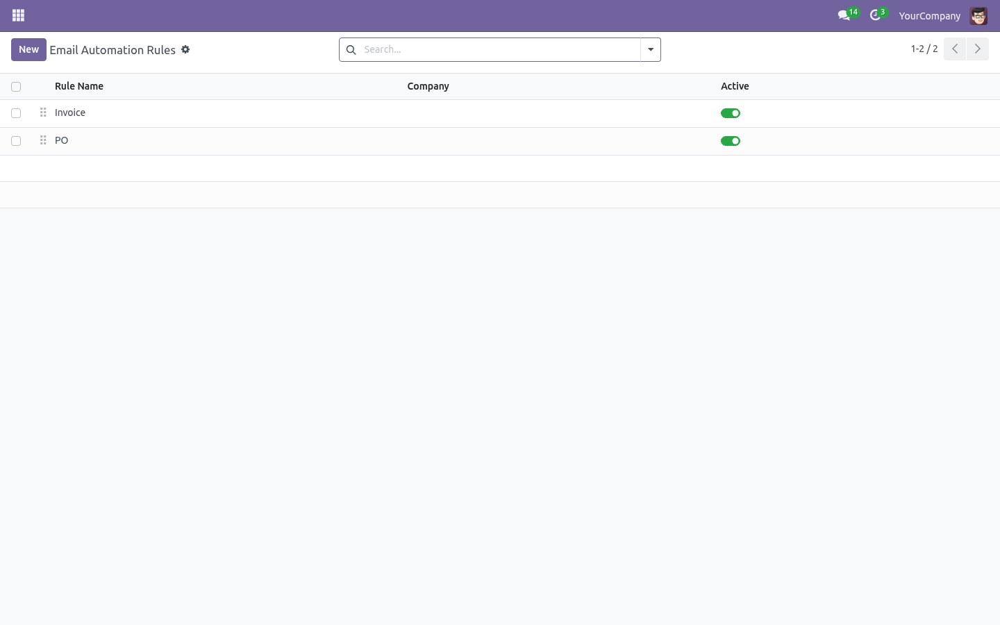
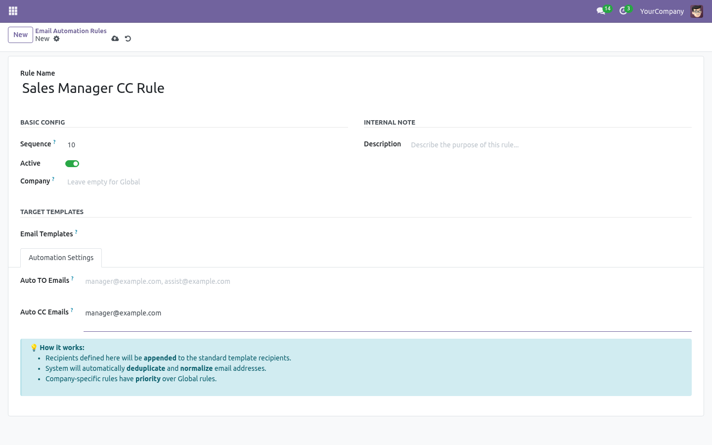

Dynamic Email Automation
Overview
Dynamic Email Automation module enables users to automatically inject additional TO and CC recipients into any Odoo email template or chatter notification. With support for multi-company overrides and global fallbacks, it ensures that the right stakeholders are always kept in the loop without manual intervention.
Key Features
- Dynamic Recipient Injection: Automatically add TO and CC recipients to specific email templates.
- Company-Aware Logic: Define rules that are specific to a company or apply globally across all companies.
- Smart Merging & Deduplication: Automatically merges configured recipients with existing ones, removing duplicates and normalizing formats.
- Chatter & System Email Support: Works seamlessly with manual "Send by Email" actions and background system notifications.
- Easy Configuration: Manage all rules from a centralized, intuitive interface in Settings.
Configuration
Navigate to Settings ==> Technical ==> Email ==> Email Automation to create and manage your dynamic email recipient rules.
How it Works
The system follows a strict priority logic to ensure accuracy:
- Company Match: If a rule exists for the current company, it is applied exclusively.
- Global Fallback: If no company-specific rule is found, the system applies "Global" rules (where the company is empty).
- Sequence: Multiple matching rules are processed based on their sequence number.
Screenshots
Below are some screenshots demonstrating the module's functionality:
-
Email Automation Dashboard: Manage all your rules in one place.

-
Rule Configuration: Easily select templates and define TO/CC recipients.

Support & Contact
For any issues or feature requests, contact us at dk.odootech@gmail.com.